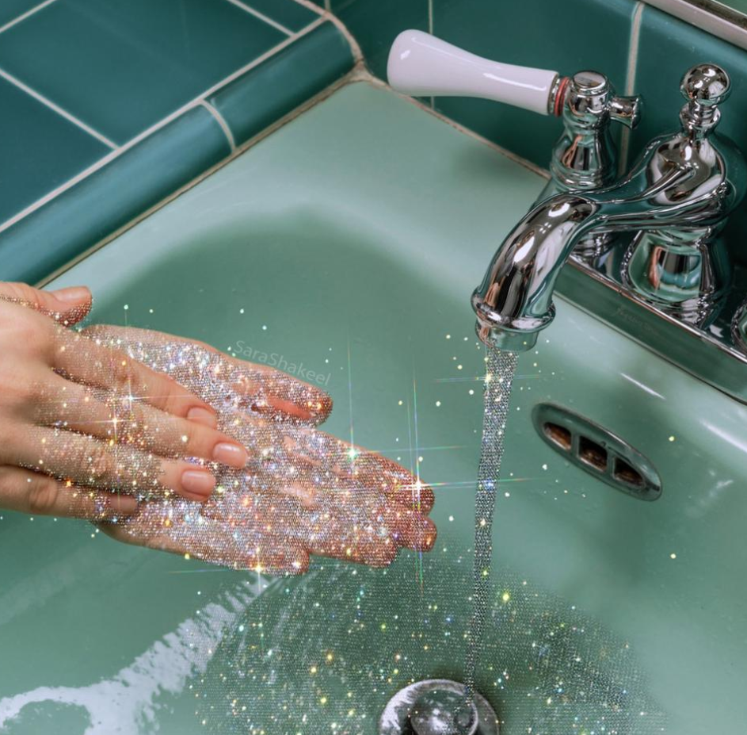

COVID Blue를 치료하는 Art Therapy
“안전한 백신! 예술치료!”
음악, 그림, 무용, 연극 등의 예술을 통해 고객의 심리적 상태를 개선하는 치료적 개입 활동이다. 임상적 기준에서 어려움이 있는 고객을 대상으로 할 수도 있지만 (ADHD, 우울증, 치매 등) 상담의 일환으로서 예술치료에 참여하려는 일반인들도 굉장히 많은, 그 저변이 폭발적으로 증가하고 있는 치료 기법이다
음악, 그림, 무용, 연극 등의 예술을 통해 고객의 심리적 상태를 개선하는 치료적 개입 활동이다. 임상적 기준에서 어려움이 있는 고객을 대상으로 할 수도 있지만 (ADHD, 우울증, 치매 등) 상담의 일환으로서 예술치료에 참여하려는 일반인들도 굉장히 많은, 그 저변이 폭발적으로 증가하고 있는 치료 기법이다
허쉬위쉬 유튜브 채널에서 영상을 통해 코로나 블루를 자가 진단하고 대처하는 영상을 소개하고 있다.
펜화 느낌의 간결한 일러스트, 블루와 레드 계열의 정제된 색상으로 주목성을 높이고, 만화 형식의 화면 분활 기법의 모션그래픽으로 정보를 전달하고 있다.
서울문화재단은 코로나19로 지친 예술가와 시민을 치유한다는 의미의 전시 < 예술해독제>를 2020년 10월 06일부터 10월 31일(토)까지 롯데백화점 강남점에서 개최하였다.